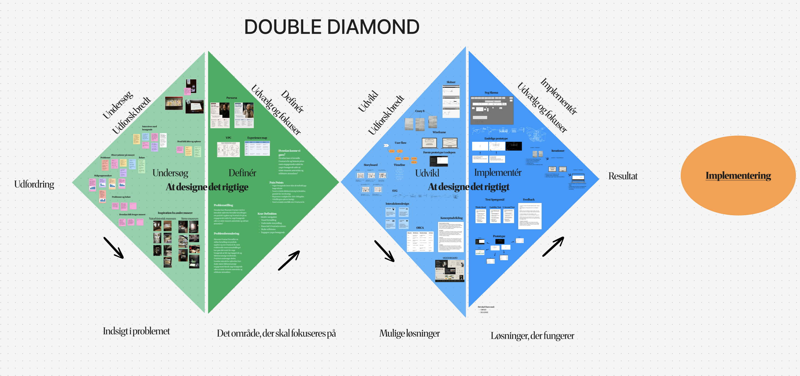
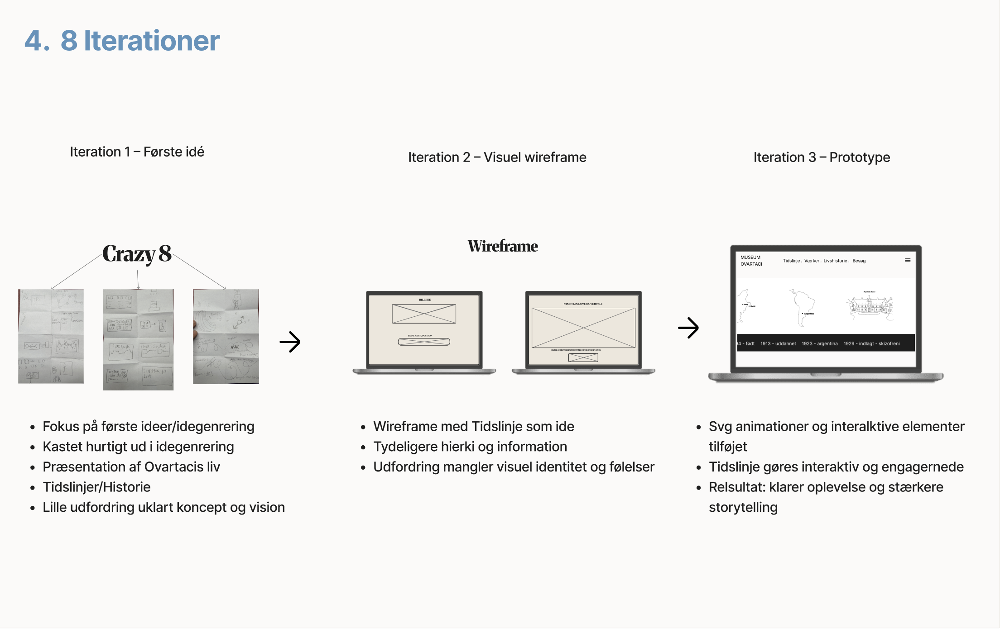
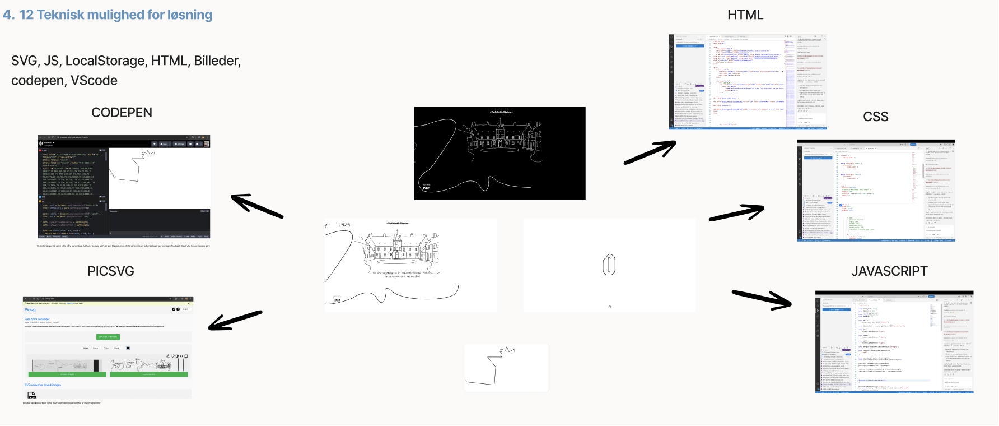

UI/UX · Storytelling · Frontend
Museum
Ovartaci
En digital fortælling om kunstneren Ovartaci. Projektet kombinerer illustrationer, interaktion og en horisontal tidslinje for at formidle hans liv på en levende og engagerende måde.
Udforsk projektet ↓
Museum Ovartaci
Digital storytelling
UI/UX · Illustration · Kode
Interaktiv weboplevelse
Den færdige oplevelse
En horisontal fortælling
Brugeren bevæger sig gennem Ovartacis historie via en horisontal tidslinje med illustrationer, årstal og interaktive elementer.
Designproces
Fra problem til løsning
Double Diamond-modellen gav processen en tydelig retning fra research og problemforståelse til idéudvikling, implementering og den færdige løsning.

Storyboard og iterationer
Idéen blev udviklet trin for trin
Projektet bevægede sig fra hurtige Crazy 8-skitser til wireframes og videre til en interaktiv prototype med en tydeligere visuel fortælling.

Teknisk opbygning
Illustrationer møder kode
Løsningen er bygget med HTML, CSS og JavaScript. SVG-elementer og illustrationer blev gjort interaktive for at skabe en oplevelse, der føles levende uden at fjerne fokus fra historien.

Resultat
En fortælling, man selv bevæger sig igennem.
Projektet viser, hvordan en historisk fortælling kan formidles digitalt gennem illustration, interaktion og et enkelt visuelt univers.
Se alle projekter →